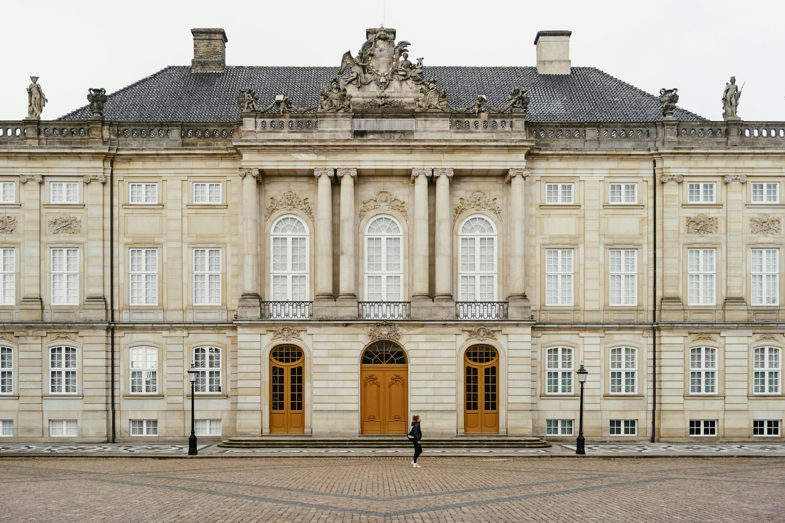
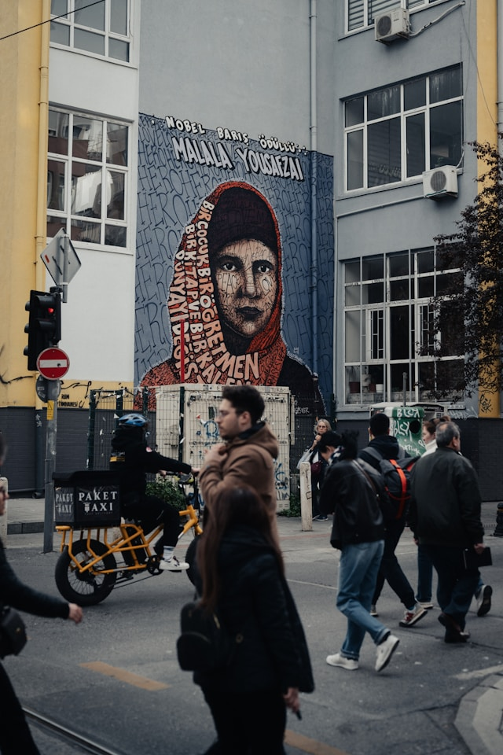
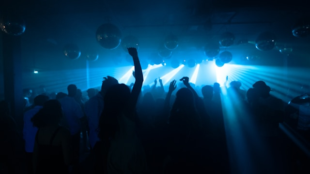

Dec 14, 2025 | 3 comments
History & Landmarks
Explore Berlin’s past at Brandenburg Gate, the Wall, and monuments that shaped Europe. Step into living history across the city’s timeless landmarks.
Where history meets creativity, and every street tells a story of freedom, art, and culture.

Dec 16, 2025 | 3 comments
Berlin is a blend of history, creativity, and everyday life. You’ll walk past grand monuments, stumble upon bold street art, and meet people who’ve turned this city into a home shaped by diversity and resilience. That’s what makes Berlin so magnetic — it’s a place that doesn’t hide its past, yet constantly reinvents itself.

Dec 14, 2025 | 3 comments
Explore Berlin’s past at Brandenburg Gate, the Wall, and monuments that shaped Europe. Step into living history across the city’s timeless landmarks.

Dec 10, 2025 | 3 comments
From world-class museums to bold street art, Berlin is a living gallery of creativity. Art thrives on every wall, stage, and museum hall.

Dec 5, 2025 | 3 comments
Relax in cafés, stroll riversides, and dive into Berlin’s legendary nightlife and music. From day cafés to night beats, the city never sleeps.